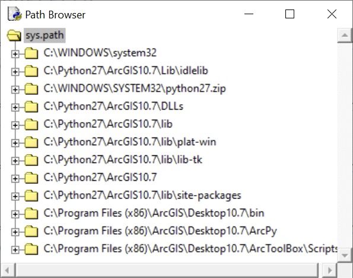

Lekce 8: Funkce a moduly
Definice a volání funkce
Často nastává situace, kdy nějakou část kódu chceme používat opakovaně. Například můžeme chtít opakovaně v našem programu počítat faktoriál nějakého čísla (přičemž toto číslo může být pokaždé jiné). Výpočet faktoriálu jsme si ukázali v kapitole o cyklu for, řešení může vypadat třeba takto:
faktorialn = 1
for i in range(n): faktorialn = faktorialn * (i+1)
print faktorialn
„Nejprimitivnější“ možností by bylo vložit tento kód všude tam, kde v kódu potřebujeme počítat faktoriál, samozřejmě vždy s patřičně změněnou hodnotou n.
Problém takového řešení nastává ve chvíli, kdy budeme chtít samotný výpočet faktoriálu změnit – např. pokud bychom zjistili, že jsme v původním kódu udělali chybu a je třeba jej opravit. Máme-li totiž výše uvedený kód v našem programu na mnoha místech, je třeba jej (správně) přepsat na každém takovém místě. To je značně nepohodlné a navíc se při tom snadno dopustíme chyb.
Elegantnějším řešením je vytvořit (tj. definovat) funkci, která bude výpočet faktoriálu provádět, a tuto funkci pak na příslušných místech volat.
Struktura zápisu definice funkce je následující:
def nazev_funkce(parametr1, parametr2, ... , parametrN):
tělo funkce
Definice je uvozena klíčovým slovem def, podle kterého interpret pozná, že se jedná o definici funkce. Následuje libovolný název a v závorkách posloupnost tzv. parametrů, tj. proměnných zastupujících hodnoty vstupující do výpočtu, který má funkce provádět. Tělo funkce pak obsahuje příkazy (psané na samostatné řádky odsazené o jednu úroveň za slovo def), které obvykle něco provádějí s parametry. Ukažme si funkci na konkrétním příkladu výpočtu faktoriálu:
def faktorial(n):
faktorialn = 1
for i in range(n): faktorialn = faktorialn * (i+1)
return faktorialn
Klíčové slovo return ukončuje definici funkce (není však povinné, jak uvidíme níže), přičemž stanoví, jaká hodnota má být funkcí vrácena při jejím volání.
Pokud odešleme kód s definicí funkce do překladače (resp. interpretu), není výsledkem provedení příslušných příkazů uvedených v těle funkce, ale pouze je funkce uložena v operační paměti a je ji možné kdykoli tzv. zavolat. Volání funkce má strukturu analogickou její definici:
nazev_funkce(argmunet1, argument2, ... , argumentN)
Jednotlivé argumenty přesně odpovídají jednotlivým parametrům funkce, jsou vlastně konkrétními hodnotami, které se při volání funkce za jednotlivé parametry dosadí. Ukažme si volání funkce opět na příkladu faktoriálu, přičemž budeme funkci definovanou výše volat v okně Python Shell:
>>> faktorial(3)
6
>>> faktorial(6)
720
>>> faktorial(10)
3628800
Výhoda tohoto řešení je zřejmá: kdykoli lze nyní použít funkci faktorial s libovolným celočíselným argumentem, přičemž pokud bychom chtěli funkci nějak změnit, stačí tak učinit pouze jednou, v samotné její definici.
Uveďme příklad funkce s více než jedním parametrem, např. funkci, která počítá zadanou celočíselnou mocninu zadaného čísla:
def mocnina(x,y):
vysledek = 1
for i in range(y): vysledek = vysledek * x
return vysledek
(Samozřejmě jsme mohli funkci definovat i jednodušeji: def mocnina(x,y): return x**y. Prozkoumejte nicméně uvedenou složitější definici a uvědomte si, že bude pro celočíselnou mocninu fungovat.)
Při volání funkce je nutné zapsat argumenty ve stejném pořadí, v jakém jsou definovány příslušné parametry:
>>> mocnina(3,4)
81
>>> mocnina(4,3)
64
Pokud bychom chtěli z nějakého důvodu zadat argumenty v jiném pořadí, než jak jsou definovány argumenty, je možné použít při volání funkce explicitně jména příslušných parametrů a operátor =:
>>> mocnina(y=4, x=3)
81
Zadávání argumentů jménem parametru je výhodné u funkcí s velkým počtem parametrů: muset si pamatovat jejich pořadí by bylo nepraktické.
Parametry mohou mít tzv. implicitní neboli výchozí hodnotu, takže je pak není nutné při volání funkce zadávat. Pokud příslušný argument nezadáme, použije se tato výchozí hodnota. Parametry s implicitní hodnotou je však nutné umístit v definici funkce na konec, tj. až za parametry bez implicitních hodnot. Důvodem je, aby parametrům bez implicitních hodnot bylo možné zadávat hodnoty na základě pořadí.
Ukažme si definování implicitní hodnoty na příkladu funkce mocnina. Pokud definujeme implicitní hodnotu parametru y jako 2, bude funkce při zadání pouze jednoho argumentu počítat jeho druhou mocninu:
def mocnina(x, y = 2):
vysledek = 1
for i in range(y): vysledek = vysledek * x
return vysledek
Po zavolání v okně Python Shell:
>>> mocnina(4) # Zde bude použita implicitní hodnota parametru y
16
>>> mocnina(4, 3) # Zde bude použita uživatelem specifikovaná hodnota parametru y
64
Samozřejmě výsledek volání funkce lze uložit do proměnné, tak jak to znáte při používání vestavěných funkcí Pythonu (např. input, range či konverzní funkce int apod.):
>>> a = mocnina(4)
>>> print a
16
Stejně tak argumenty funkce mohou být zadávány přímo pomocí hodnot (viz ukázky výše), nebo pomocí proměnných:
>>> a = 4
>>> b = 5
>>> mocnina(a, b)
1024
Jak jsme se již zmínili, funkce mohou, ale nemusí mít návratovou hodnotu. Pokud funkce pouze něco vykoná, ale nic nevrátí, říká se jít někdy procedura. Pozná se podle toho, že v definici neobsahuje klíčové slovo return. Příkladem může být funkce, která výsledek výpočtu zapíše do textového souboru:
# funkce, která otevře textový soubor a vytvoří nový, se zrcadlově obráceným textem
def prevrat_text(txt_in, txt_out):
# přečtení vstupního textového souboru
in_file = open(txt_in, "r")
in_text = in_file.read()
in_file.close()
# zápis výstupního souboru se zrcadlově otočeným textem
out_file = open(txt_out, "w")
for i in range(len(in_text), 0, -1):
out_file.write(in_text[i-1])
out_file.close()
Pokud volání takové funkce (procedury) uložíme do nějaké proměnné, nebude tato proměnná nic obsahuje (bude odkazovat na objekt None). Přesto funkce (procedura) svou práci odvede.
Úkol 1. Napište funkci pro výpočet n-tého členu Fibonacciho posloupnosti.
Úkol 2. Napište funkci, která otevře daný textový soubor a vrátí počet jeho slov (parametrem funkce bude textový řetězec s adresou souboru).
Jmenné prostory a jejich hierarchie
Pokud zadáváme argumenty funkce pomocí proměnných, je otázkou, zda lze tuto proměnnou uvnitř funkce měnit tak, aby se změna projevila i mimo funkci. Zkusme si to na příkladu funkce, která pouze změní hodnotu vstupní proměnné:
def zmen_hodnotu(a):
a = a + 1
Nyní ověříme, zda bude mít funkce vliv na původní proměnnou, zadanou do funkce jako argument:
>>> a = 5
>>> zmen_hodnotu(a)
>>> a
5
Jak je vidět, funkce původní proměnnou neovlivní. Jak to? Je to proto, že příkaz a = a + 1v těle funkce ve skutečnosti vytvoří novou proměnnou a, jejíž hodnota se nastaví s využitím parametru a (na pravé straně výrazu). Tato nová proměnná je nicméně "vidět" pouze v rámci funkce, neboť je v jejím jmenném prostoru.
Jmenný prostor (angl. namespace) je jakýsi virtuální prostor, ve kterém jsou definována různá jména, typicky právě jména proměnných a funkcí. Jmenných prostorů může být více, přičemž jsou hierarchicky uspořádány. Základním jmenným prostorem je tzv. vestavěný jmenný prostor, obsahující např. jména vestavěných funkcí jako range či print. Jelikož jsou tato jména definována ve vestavěném prostoru, jsou dostupná v jakékoli části kódu v jazyce Python.
Dalším jmenným prostorem, který je o jednu hierarchickou úroveň níže, je tzv. globální jmenný prostor. Ten vzniká automaticky při otevření konzole Python Shell (resp. při spuštění skriptu). Pokud konzoli otevřeme spuštěním programu IDLE z nabídky programů, případně ji restartujeme pomocí Shell -> Restart Shell, globální jmenný prostor se nastaví jako prázdný. Při jakémkoli vytvoření proměnné či funkce se následně dané jméno přidá do globálního prostoru, díky čemuž s ním nadále můžeme v tomto prostoru pracovat. Opětovné restartování konzole však globální jmenný prostor opět vyprázdní:
>>> a = 5 # Vytvoření proměnné v globálním jmenném prostoru
>>> a # Proměnná existuje...
5
>>>
=============================== RESTART: Shell ===============================
>>> a # Po restartu konzole již proměnná v globálním jmenném prostoru není:
Traceback (most recent call last):
File "<pyshell#2>", line 1, in <module>
a
NameError: name 'a' is not defined
Vedle globálního jmenného prostoru můžeme v rámci skriptu vytvořit libovolné množství vzájemně hierarchicky zanořených tzv. lokálních jmenných prostorů. Jakékoli jméno vytvořené v daném lokálním prostoru existuje (tj. je "dostupné" či "viditelné") pouze v rámci tohoto prostoru.
Lokální jmenný prostor je vždy automaticky vytvořen v rámci těla funkce. Pokud tedy v těle funkce vytvoříme proměnnou a, s touto proměnnou můžeme zacházet uvnitř těla této funkce, nikoli však mimo ně:
>>> def nejaka_funkce(parametr): a = parametr + 1
>>> nejaka_funkce(5)
>>> a
Traceback (most recent call last):
File "<pyshell#4>", line 1, in <module>
a
NameError: name 'a' is not defined
Při vyhodnocování jmen použitých v kódu se nejprve prohledává jmenný prostor nejnižší hierarchické úrovně. Pokud se zde dané jméno nenajde, postupuje se hierarchií jmenných prostorů výše.
Tímto způsobem můžeme např. lokálně změnit některá globální či vestavěná jména:
>>> range = "ahoj"
>>> range(5)
Traceback (most recent call last):
File "<pyshell#7>", line 1, in <module>
range(5)
TypeError: 'str' object is not callable
Nyní se znovu podíváme na funkci, kterou jsme definovali na začátku této sekce, z hlediska jmenných prostorů:
def zmen_hodnotu(a):
a = a + 1
V první řadě jsme touto definicí vytvořili (resp. vytvoří se, až se kód s definicí spustí) jméno zmen_hodnotu v globálním jmenném prostoru. Díky tomu budeme schopni funkci volat. Dále parametr a v hlavičce funkce vytváří jméno a, které bude existovat v lokálním jmenném prostoru této funkce. Díky tomu můžeme v těle funkce použít jméno a na pravé straně příkazu a = a + 1. Jméno a z levé strany
Práce s moduly
Modul je soubor se zdrojovým kódem, obsahujícím především definice nejrůznějších funkcí (ale i jiných objektů, jako jsou proměnné, třídy ad.). Význam modulu je v tom, že umožňuje použití v něm definovaných funkcí (či jiných objektů) v libovolném kódu, aniž bychom museli tyto funkce v daném kódu definovat. V modulu jsou tyto funkce již definovány a nám stačí je z daného modulu načíst.
Modul se vlastně formálně nijak neliší od jakéhokoli skriptu. Není to nic jiného než textový soubor s příponou .py. Ve skutečnosti je možné to chápat i opačně a považovat jakýkoli skript za modul. V praxi se však pojmenování modul používá pro skripty obsahující téměř výhradně definice funkcí (či tříd). Moduly tak často hrají roli jakýchsi knihoven funkcí, použitelných v jakémkoli jiném skriptu či přímo v interaktivním okně Python Shell.
Vedle modulů existují v terminologii Pythonu ještě tzv. balíčky (site-packages). Jejich význam je stejný jako u modulů, rozdíl je pouze v tom, že mají složitější strukturu, díky níž může jeden balíček obsahovat řadu modulů. Vzhledem k tomu, že používání balíčků se formálně nijak neliší od používání modulů, nebudeme v tomto textu mezi balíčky a moduly rozlišovat a zůstaneme u souhrnného označení modul. Moduly obsažené uvnitř balíčků pak budeme v případě potřeby označovat jako pod-moduly.
Jak již víte, pokud chceme použít funkce nějakého modulu, je třeba modul načíst pomocí příkazu import. Syntaxe je tedy:
import nazev_modulu
Název modulu se uvádí bez koncovky .py a bez udání jeho umístění na disku. Příslušný modul samozřejmě musí existovat a musí být umístěn v některé ze složek, v nichž jsou moduly při použití příkazu import vyhledávány. (Jak zjistit či ovlivnit, které složky v počítači jsou při načítání modulů prohledávány, si povíme v další části.)
Po načtení modulu máme k dispozici veškeré funkce, které jsou v něm definovány. Jinými slovy, příslušná jména jsou přidána do globálního jmenného prostoru, ovšem s předponou nazev_modulu.. K příslušným funkcím (či proměnným a jiným objektům) tak musíme přistupovat následovně:
nazev_modulu.nazev_funkce(argumenty)
Příklad modulu os:
import os
os.getcwd()
'C:\\my_path\\pracovni_adresar'
Chceme-li z nějakého modulu použít jen nějakou jeho část, např. jen jednu funkci, můžeme namísto celého modulu načíst jen tuto jeho část:
from nazev_modulu import nazev_funkce
Načtenou funkci pak mámek dispozici přímo, tj. nemusíme (a ani nemůžeme) k ní přistupovat pomocí uvedení názvu modulu a tečky. Příslušné jméno je přidáno přímo do globálního jmenného prostoru:
>>> from os import getcwd
>>> getcwd()
'C:\\my_path\\pracovni_adresar'
Stejnou syntax můžeme použít i pro načtení pod-modulů, jak jsme již uvedli v lekci 7 na příkladu modulu path z balíčku os:
# Varianta s načtením celého balíčku os
>>> import os
>>> os.path.join("C:", "my_path", "my_file.txt")
'C:my_path\\my_file.txt'
# Varianta s načtením pouze modulu path
>>> from os import path
>>> path.join("C:", "my_path", "my_file.txt")
'C:my_path\\my_file.txt'
Podobně můžeme načíst všechny funkce z daného modulu naráz, ale způsobem uvedeným výše, tj. vlastně každou zvlášť:
from nazev_modulu import *
Všechny funkce či pod-moduly daného modulu jsou pak přístupné přímo přes své jméno, aniž bychom uváděli jméno modulu. Jsou totiž přidány přímo do globálního jmenného prostoru. Tato praxe však není doporučována, a to z následujících důvodů:
- Ztrácíme přehled o tom, kde se vlastně jednotlivé funkce vzaly, tj. zda jsme je definovali sami, případně z jakého modulu je načítáme.
- V případě, že více modulů obsahuje funkce (či jiné objekty) stejného jména, které však dělají něco jiného (to se může v praxi snadno stát), ztrácíme přehled, kterou z daných funkcí vlastně voláme.
- Jména načtených funkcí (či jiných objektů) se smíchají s ostatními jmény globálního jmenného prostoru, takže může dojít ke konfliktu jmen z modulu a jmen, která jsme sami vytvořili (např. nějaká naše proměnná se může jmenovat stejně jako nějaká funkce z daného modulu).
Jméno modulu můžeme při načtení nahradit nějakým vlastním, zpravidla kratším jménem:
import nazev_modulu as vlastni_kratsi_nazev
vlastni_kratsi_nazev.funkce_modulu()
Příklad:
>>> import random as rnd
>>> rnd.random()
0.5218355675703937
Jak vytvořit vlastní modul
Vytvořit vlastní modul je stejně jednoduché, jako napsat skript. Je to vlastně totéž. Pro ukázku si vytvořme jednoduchý modul, nazvaný matematika, který bude obsahovat dvě funkce, obsah_kruhu a obvod_kruhu. Vytvořte skript s následujícím kódem:
"""Toto je modul s funkcemi pro vypocet obsahu a objemu kruhu."""
pi = 3.1416
def obvod_kruhu(r):
"""Tato funkce pocita obvod kruhu o polomeru r."""
return 2*pi*r
def obsah_kruhu(r):
"""Tato funkce pocita obsah kruhu o polomeru r."""
return pi*r*r
Následně skript uložte do pracovního adresáře pod názvem matematika.py. (Připomínáme, že aktuální pracovní adresář zjistíte pomocí funkce getcwd z modulu os, případně jej můžete změnit funkcí chdir ze stejného modulu.)
Nyní je možné skript normálně spustit (např. klávesovou zkratkou F5) tak, jak jsme zvyklí spouštět skripty. Výsledkem je, že se obsah skriptu nahraje do okna Python Shell (a je tudíž přístupný pomocí procházení paměti příkazů), takže jednotlivé funkce ve skriptu definované jsou přímo přístupné pod svým názvem (naopak ale nebudou přístupné pod názvem modulu, protože ve skutečnosti nedošlo k jeho načtení).
Jinou možností, o kterou nám v tuto chvíli jde, je načtení modulu z okna Python Shell pomocí příkazu import:
>>> import matematika
Nyní lze k funkcím a proměnným modulu přistupovat přes název modulu:
>>> import matematika
>>> matematika.pi
3.1416
>>> matematika.obvod_kruhu(4)
25.1328
>>> matematika.obsah_kruhu(4)
50.2656
Zbývá vysvětlit, k čemu jsou dobré textové řetězce na začátku výše uvedeného skriptu a uvnitř definic obou uvedených funkcí. Tyto textové řetězce jsou nepovinné, tj. modul i funkce by stejně dobře fungovaly i bez nich. Uvedli jsme je v této ukázce proto, abychom ukázali možnost psát dokumentační řetězce, v nichž je zpravidla uvedena popisná informace o účelu daného modulu či funkce. Dokumentační řetězec, pokud existuje, je možné vyvolat zavolání jména modulu či funkce, tečky a řetězce __doc__ (pozor: před i za slovem doc jsou vždy dvě podtržítka):
>>> matematika.__doc__
'Toto je modul s funkcemi pro vypocet obsahu a objemu kruhu.'
>>> matematika.obsah_kruhu.__doc__
'Tato funkce pocita obsah kruhu o polomeru r.'
Budeme-li již načtený modul upravovat a následně jej znovu načteme příkazem import, modul ve skutečnosti znovu načten nebude a provedené změny se tudíž neprojeví. Příkaz import totiž nejprve zkontroluje, zda příslušný modul již není načtený, a pokud ne načte jej. Pokud ano, neudělá nic. K tomu, abychom již načtený modul načetly znovu, je třeba použít vestavěnou funkci reload:
>>> reload(matematika)
<module 'matematika' from 'C:\Python25\matematika.pyc'>
Nyní zbývá vyřešit, kam vlastně moduly ukládat, abychom je mohli načítat příkazem import. Pokud zavoláme příkaz import a uvedeme název nějakého modulu, interpret načte první modul zadaného jména, který nalezne ve složkách, v nichž moduly hledá. Jaké složky to jsou, lze zjistit pomocí proměnné path definované v modulu sys. Tato proměnná obsahuje seznam adres, které se mají při načítání modulů prohledávat. K jejímu zavolání je třeba samozřejmě nejprve načíst modul sys:
>>> import sys
>>> sys.path
['C:\\Python25\\Lib\\idlelib', 'C:\\Program Files\\ArcGIS\\bin', 'C:\\WINDOWS\\system32\\python25.zip', 'C:\\Python25\\DLLs', 'C:\\Python25\\lib', 'C:\\Python25\\lib\\plat-win', 'C:\\Python25\\lib\\lib-tk', 'C:\\Python25', 'C:\\Python25\\lib\\site-packages']
Konkrétní obsah seznamu bude samozřejmě záviset na konkrétním počítači.
Pokud budeme chtít k tomuto seznamu nějakou složku přidat, je možné proměnnou path změnit standardním způsobem, jakým se pracuje se seznamy:
>>> sys.path.append("C:\\Moje_slozka")
>>> sys.path
['C:\\Python25\\Lib\\idlelib', 'C:\\Program Files\\ArcGIS\\bin', 'C:\\WINDOWS\\system32\\python25.zip', 'C:\\Python25\\DLLs', 'C:\\Python25\\lib', 'C:\\Python25\\lib\\plat-win', 'C:\\Python25\\lib\\lib-tk', 'C:\\Python25', 'C:\\Python25\\lib\\site-packages', 'C:\\Moje_slozka']
Tímto způsobem můžeme do proměnné path přidat složky, v nichž máme uložené moduly. Tuto akci však budeme muset udělat vždy znovu, kdykoli spustíme Python. Jinou možností je ukládat moduly do složky, která již v seznamu proměnné path je. Tento způsobe však není vhodný, neboť při přeinstalování Pythonu jsou tyto složky většinou smazány a s nimi i vše, co obsahují. Vhodnější je proto např. do kódu programu, v němž budeme chtít načítat nějaké vlastní moduly, rovnou vložit příkaz s aktualizací proměnné path.
Jinou možností je ukládat moduly do stejné složky, v níž je uložen samotný program (či „hlavní skript“), neboť do proměnné path je vždy automaticky přidána aktuální pracovní složka (tj. např. složka, z níž je spouštěn nějaký skript).
Jiný způsob, jak prohlížet složky s moduly, je pomocí prohlížeče Path Browser, umístěného v hlavní nabídce okna Python Shell pod File -> Path Browser. Okno prohlížeče vypadá následovně:

Shrnutí
Úlohy
- Napište funkci, která vrátí maximum resp. minimum ze zadaného seznamu čísel (řešte bez použití vestavěné funkce
maxresp.min). - Napište funkci, která seřadí vzestupně (sestupně) zadaný seznam čísel (řešte bez použití metody seznamu
sort). (Nápověda: můžete použít např. algoritmus "řazení výběrem", "řazení vkládáním" či "bublinkové řazení". Pro přehled různých přístupů viz např. tento odkaz na wikipedii.)